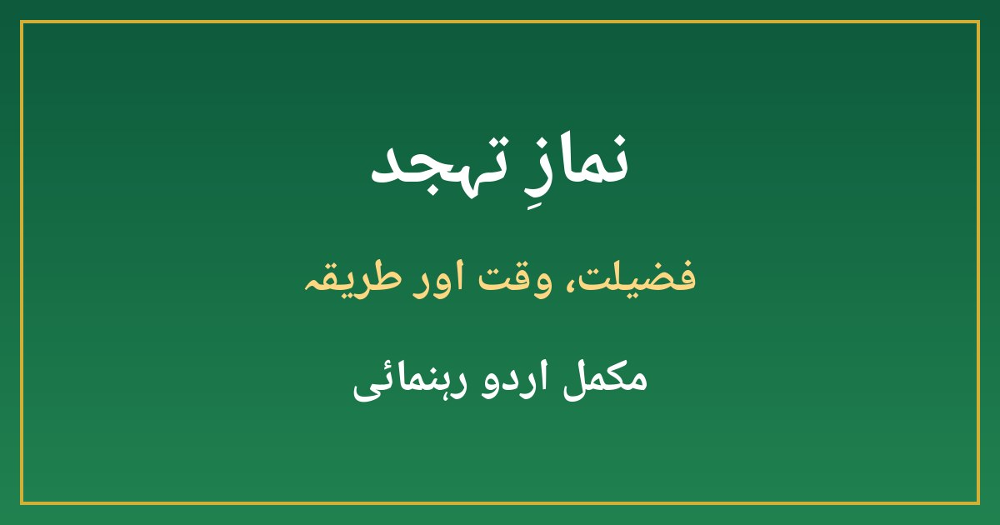

نمازِ تہجد کی فضیلت، وقت اور طریقہ — مکمل اردو رہنمائی

رات کی خاموشی میں جب دنیا سو رہی ہوتی ہے، اس وقت اللہ کے حضور کھڑے ہو کر نماز پڑھنا عبادت کی سب سے خاص صورتوں میں سے ایک ہے۔ اسی نماز کو تہجد کہتے ہیں۔ یہ فرض نہیں، نفل ہے، لیکن قرآن و حدیث میں اس کی فضیلت اتنی زیادہ بیان ہوئی ہے کہ اسے مومن کی پہچان اور اللہ سے قربت کا سب سے قریبی راستہ قرار دیا گیا ہے۔ بہت سے لوگ تہجد پڑھنا چاہتے ہیں مگر انہیں یہ معلوم نہیں ہوتا کہ اس کا وقت کب شروع ہوتا ہے، کتنی رکعتیں پڑھنی ہیں اور شروعات کیسے کی جائے۔ اس مضمون میں تہجد کی فضیلت، وقت، طریقہ اور عملی منصوبہ آسان اردو میں بیان کیا گیا ہے۔
1۔ تہجد کیا ہے؟
تہجد اس نفل نماز کو کہتے ہیں جو عشاء کی نماز کے بعد رات کو کچھ دیر سو کر اٹھ کر پڑھی جائے۔ "تہجد" کا لفظی مطلب ہے نیند ترک کر کے اٹھنا، اسی لیے علماء کے نزدیک اصل تہجد وہی ہے جو نیند کے بعد ادا کی جائے۔ اگر کوئی شخص عشاء کے بعد بغیر سوئے رات کے کسی حصے میں نفل پڑھے تو وہ بھی قیام اللیل کہلاتا ہے، لیکن تہجد کی خاص فضیلت نیند توڑ کر اٹھنے میں ہے۔ یہ نماز انفرادی عبادت ہے، اسے گھر میں پڑھنا بہتر ہے اور اس میں لمبی تلاوت، سکون سے رکوع و سجود اور دل سے دعا کرنا پسندیدہ ہے۔
2۔ قرآن و حدیث میں تہجد کی فضیلت
اللہ تعالیٰ نے قرآن میں رات کی عبادت کرنے والوں کی تعریف فرمائی ہے کہ وہ راتوں کو اپنے رب کے حضور سجدے اور قیام میں گزارتے ہیں، اور فرمایا کہ رات کا قیام نفس کی تربیت کے لیے سب سے زیادہ مؤثر ہے۔ نبی کریم ﷺ نے فرمایا کہ فرض نمازوں کے بعد سب سے افضل نماز رات کی نماز ہے، اور یہ بھی فرمایا کہ اللہ تعالیٰ رات کے آخری تہائی حصے میں آسمانِ دنیا کی طرف اپنی شان کے مطابق نزول فرماتا ہے اور پکارتا ہے: ہے کوئی مانگنے والا کہ میں اسے عطا کروں؟ ہے کوئی مغفرت طلب کرنے والا کہ میں اسے بخش دوں؟ یہی وجہ ہے کہ تہجد کو دعاؤں کی قبولیت کا سب سے بہترین وقت کہا جاتا ہے۔ نبی ﷺ خود تہجد کی بہت پابندی فرماتے تھے، حتیٰ کہ آپ ﷺ کے پاؤں مبارک ورم آ جاتے تھے، اور جب پوچھا گیا تو فرمایا کہ کیا میں شکر گزار بندہ نہ بنوں؟
3۔ تہجد کا وقت کب ہوتا ہے؟
تہجد کا وقت عشاء کی نماز کے بعد سے فجر کی اذان تک رہتا ہے، لیکن بہترین وقت رات کا آخری تہائی حصہ ہے۔ اس کا آسان حساب یہ ہے کہ مغرب سے فجر تک کے وقت کو تین حصوں میں تقسیم کر لیں، آخری حصہ سب سے افضل ہے۔ عام طور پر پاکستان میں سردیوں میں یہ وقت رات دو بجے کے بعد اور گرمیوں میں رات تین بجے کے قریب شروع ہوتا ہے، لیکن صحیح وقت آپ اپنے شہر کے نماز کے اوقات سے نکال سکتے ہیں۔ جو شخص آخری حصے میں اٹھنا مشکل سمجھے، وہ عشاء کے بعد کچھ دیر سو کر جلدی اٹھ کر بھی تہجد پڑھ سکتا ہے — اصل بات اٹھنا اور پڑھنا ہے، کامل وقت کا انتظار کرتے ہوئے اسے چھوڑ دینا درست نہیں۔
4۔ تہجد پڑھنے کا طریقہ — قدم بہ قدم
تہجد کا طریقہ عام نفل نماز جیسا ہی ہے، کوئی الگ اذان یا اقامت نہیں۔ پہلے وضو کریں، پھر دو رکعتوں کی نیت سے کھڑے ہوں۔ نیت دل کا ارادہ ہے، زبان سے الفاظ کہنا ضروری نہیں۔ پہلی رکعت میں سورہ فاتحہ کے بعد کوئی سورت پڑھیں، رکوع و سجود سکون سے ادا کریں اور دو رکعتیں مکمل کر کے سلام پھیریں۔ اسی طرح دو دو رکعتیں کر کے جتنی توفیق ہو پڑھیں۔ نبی ﷺ کی عام عادت گیارہ رکعتیں تھیں: آٹھ رکعت تہجد اور تین رکعت وتر۔ جو شخص زیادہ نہ پڑھ سکے، وہ چار یا صرف دو رکعتیں بھی پڑھ لے — اللہ کے ہاں تھوڑی مگر مستقل عبادت زیادہ پسندیدہ ہے۔ آخر میں وتر پڑھیں، اگر وتر عشاء کے ساتھ پہلے ہی پڑھ چکے ہوں تو دوبارہ پڑھنے کی ضرورت نہیں۔
5۔ تہجد میں کیا پڑھیں اور کیا مانگیں؟
تلاوت میں لمبی سورتیں پڑھنا سنت ہے، لیکن جو شخص لمبی سورتیں یاد نہ رکھتا ہو، وہ چھوٹی سورتیں بھی سکون اور تدبر سے پڑھ سکتا ہے۔ رکوع میں تسبیح اور سجدے میں دعا لمبی کرنا تہجد کی روح ہے — سجدہ اللہ سے قربت کی سب سے قریبی حالت ہے۔ دعا میں پہلے اللہ کی حمد و ثنا اور درود شریف پڑھیں، پھر اپنے گناہوں کی معافی مانگیں، پھر دنیا و آخرت کی بھلائیاں طلب کریں۔ اپنی زبان میں دعا مانگنا بھی جائز ہے، کیونکہ اللہ دلوں کی بات جانتا ہے۔ اپنی، والدین کی، اہل خانہ کی اور امت کی بھلائی کے لیے دعا کریں، اور دعا کے بعد یقین رکھیں کہ اللہ ضرور سنتا ہے، قبولیت کی صورت اللہ کی حکمت کے مطابق ہوتی ہے۔
6۔ تہجد کی عادت بنانے کا آسان منصوبہ
شروعات میں جوش میں آ کر ساری رات جاگنے کے بجائے چھوٹے قدم اٹھائیں:
- پہلے ہفتے صرف دو رکعتیں پڑھیں، چاہے فجر سے آدھا گھنٹہ پہلے اٹھ کر ہی سہی
- سونے سے پہلے الارم لگائیں اور موبائل کو دور رکھیں تاکہ صبح الارم بند کر کے دوبارہ سو نہ جائیں
- جلدی سونے کی عادت ڈالیں — دیر تک جاگنا تہجد کا سب سے بڑا دشمن ہے
- وضو کا پانی اور جائے نماز پہلے سے تیار رکھیں تاکہ اٹھتے ہی سستی نہ ہو
- ایک ساتھی یا اہل خانہ کے فرد کو ساتھ ملا لیں، ایک دوسرے کو جگانا عادت بنانے میں مددگار ہوتا ہے
- چھوٹ جانے پر مایوس نہ ہوں — اگلی رات دوبارہ کوشش کریں، استقامت ہی اصل کامیابی ہے
چند ہفتوں میں جب دو رکعتیں عادت بن جائیں تو آہستہ آہستہ چار، چھ اور پھر آٹھ رکعتوں تک بڑھائیں۔ اصل مقصد تعداد نہیں، دل کی حاضری اور مستقل مزاجی ہے۔
7۔ عام غلطیاں جن سے بچنا چاہیے
پہلی غلطی یہ ہے کہ تہجد کے شوق میں فجر کی نماز چھوٹ جائے — فرض کی حفاظت نفل سے کہیں زیادہ اہم ہے، اس لیے اتنی دیر تک نہ جاگیں کہ فجر قضا ہو جائے۔ دوسری غلطی تہجد کو دکھاوا بنا دینا ہے: اپنی عبادت کا ذکر ہر جگہ کرنا اس کے اجر کو کم کر دیتا ہے، تہجد کا حسن اس کے چھپے ہونے میں ہے۔ تیسری غلطی اپنے آپ پر اتنی سختی کرنا کہ چند دن بعد ہی چھوٹ جائے — اسلام میں میانہ روی پسندیدہ ہے۔ چوتھی غلطی یہ سمجھنا کہ تہجد صرف مشکلات میں پڑھی جاتی ہے؛ دراصل یہ شکر گزاری اور قربت کی نماز ہے، خوشی اور غم دونوں میں اس کی جگہ ہے۔
تہجد رات کی تنہائی میں اللہ سے ملاقات کا نام ہے۔ اس کا وقت آخری تہائی رات ہے، طریقہ دو دو رکعتوں کا ہے، اور اصل روح سکون، تدبر اور دل سے دعا ہے۔ آج رات سے ہی دو رکعتوں سے آغاز کریں — ہو سکتا ہے یہی چھوٹی شروعات آپ کی زندگی کی سب سے بڑی روحانی تبدیلی بن جائے۔